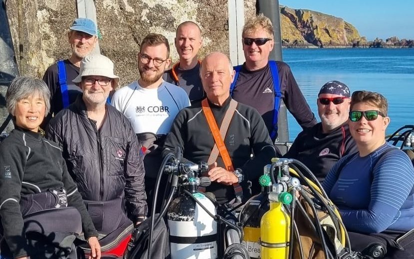
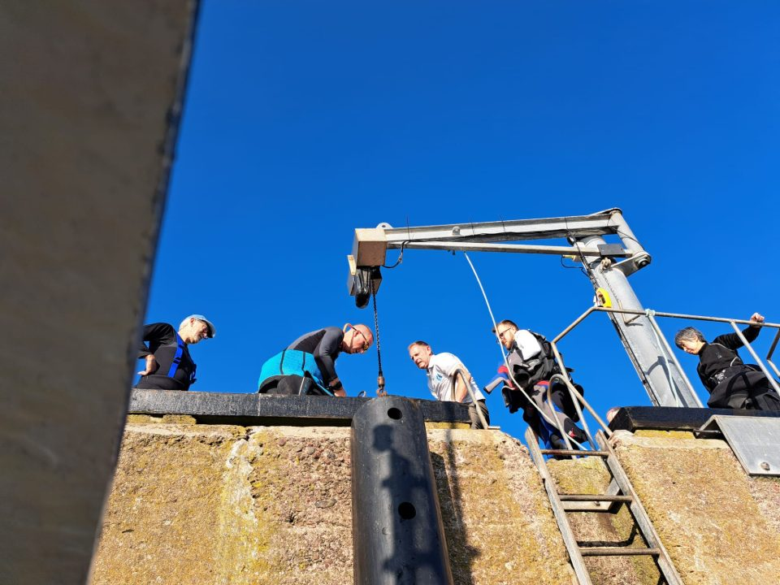
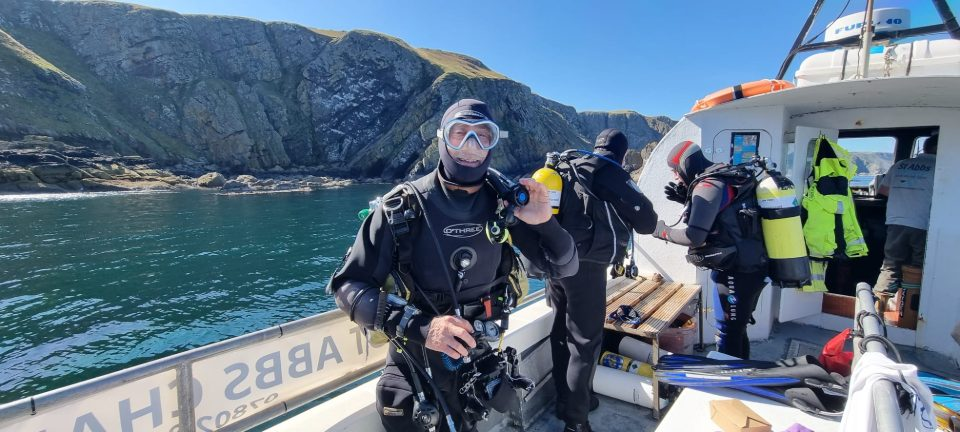
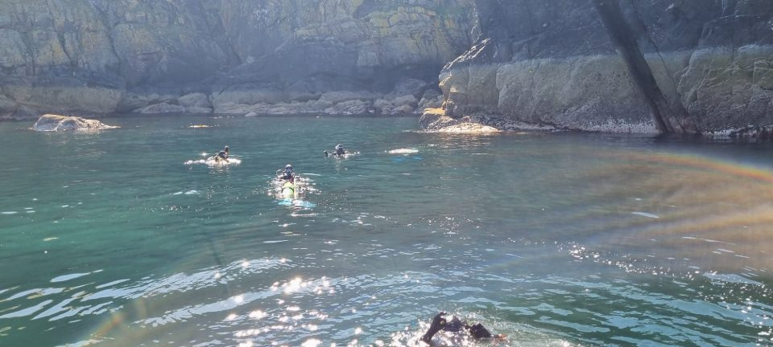
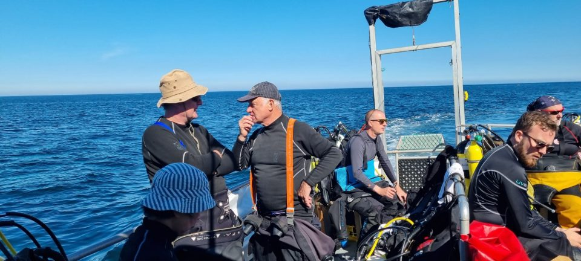
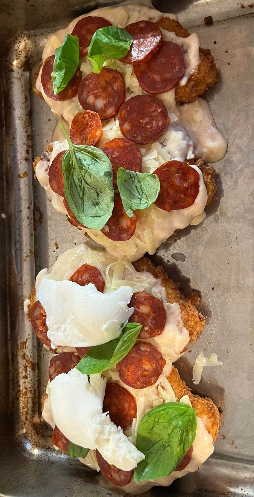
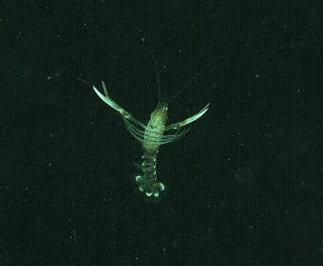
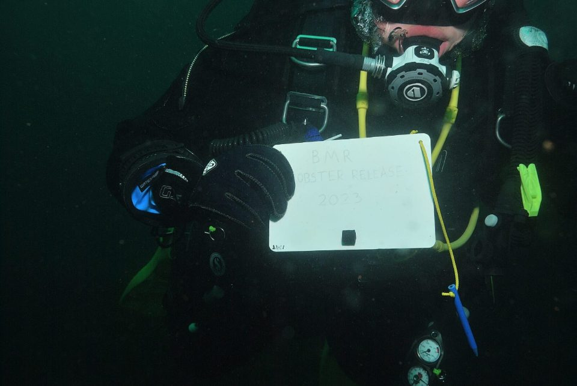
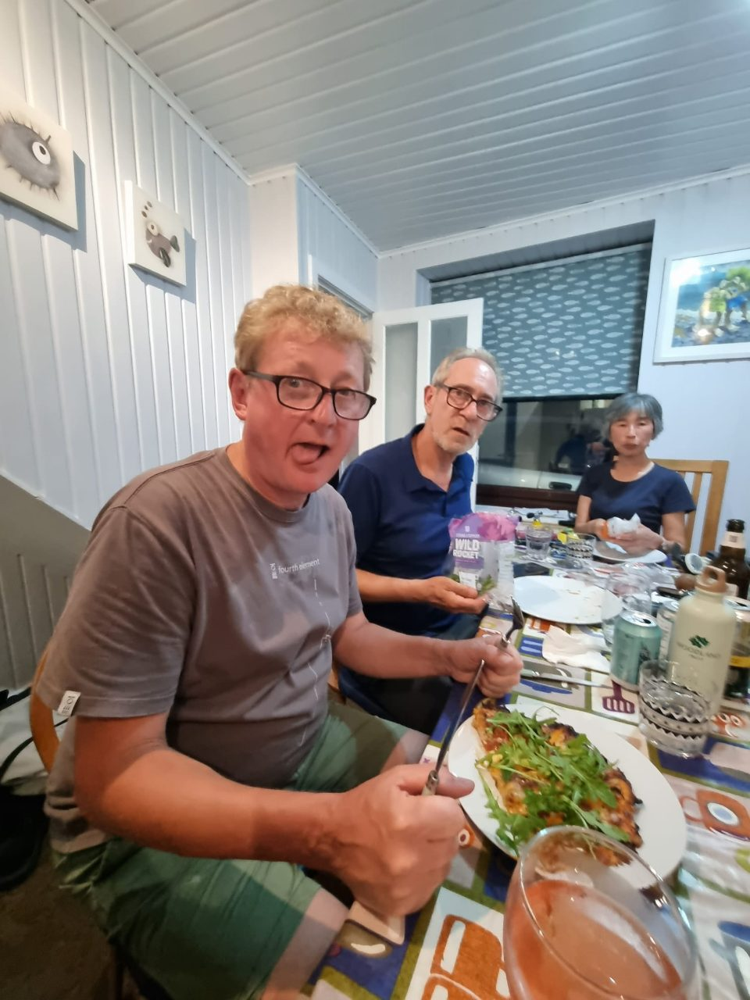

St Abbs, 2nd - 9th September 2023

From wrecks to wolf fish and Belgium beers to Middlesbrough Parmo's, all the delights of a week diving off the coast of St Abbs, Scotland. We had a beautiful house for the week with a scramble on Saturday night to pick the best bedrooms. We went our separate ways that evening, with some exploring, others taking in the sun on the harbour walls, while a few exploring the local drinking spots.

We started off our dives on the Monday with two dives planned. Stingray, the dive boat operated by St Abbs Charters, departed the harbour swiftly at 0900, with our first dive of the trip at Burnmouth Cave, a fairly shallow dive with lots to see including an array of lobsters, crabs, a dogfish, flat fish, grey gurnard and so on. After the dive, we had a lunch break, some had packed lunches while the ones who wanted the extra time in bed opted for the local bakery who produced fresh cakes and sandwiches every morning (I don't call it lazy, I call it supporting local businesses!). The second dive was to Thrummie Carr. We couldn't believe our luck with the weather and visibility, something that continues throughout the trip with the exception of the last day, but we will touch on that later.


The second day was another 0900 departure, so an early start for the group, but with great views and a nice morning warmth we were not complaining. The first dive of the day was to Black Carr, a renowned spot for the infamous wolf-fish, we all got into our buddy pairs and each came up with plans to spot this rare fish, some were to go deep, others shallower warmer water, some to head to the darker eerie spots, while others headed to lighter spots. After the dive, we all regrouped on the boat waiting to hear if anyone had seen one, sadly the group had no luck.

After lunch we dived a site called West Hurker, I can't talk for the group, but for me this was an experience. Myself and my buddy, Howard, were finning along when we came across a large rock, I was behind Howard investigating and this is where I spotted the celebrity of the trip, the wolf fish. I was trying to get Howard's attention but I had noticed he stopped, he was pointing under the opposite side of the rock to me and I was also pointing to my side. I finned over to Howard's area and noticed that he had seen one also, two wolf fish under the same rock. I signalled that I had also seen one and we joked about who had seen the first one and as us men do, whose was bigger. The evening was filled with laughs and myself and Howard talking about our find with, maybe, a bit of exaggeration added....
Wednesday was a later start of 1000 with the weather not as great, the swell was greater today with someone's sea legs giving way (myself *cough cough). We still managed two dives, but visibility had gone down slightly due to the swell. We ticked off yet another new site today, Anemones Gully, an amazing swim through with a big shoal of mackerel as far as the eye could see. The second dive in the afternoon was West Hurker again with the brilliant swim through at the beginning.
The penultimate day was the deepest yet, the weather gods were on our side, and we were able to dive a 30 metre wreck, the Glanmire, which is weather dependent. The wreck was beautiful, with both boilers still intact and the prop vertically on the ground where it hasn't moved since the vessel ran aground in 1918. This was followed by a site called Ringholm (Odense)/Pettico Wick. A nice shallow dive after our 30 metre with yet another wreck, although to add, most of the group couldn't find the wreck but we didn't mind. The weather was great with perfect visibility and lots of marine life.
Howard had booked a special treat for us all that evening, a craft beer pub, with over 176 different beers from American IPA's, Belgium blondes and a beer costing over £60, and that is not a spelling mistake. After a few beers it was food time, the delicacy is a Middlesbrough parmo, which is a chicken schnitzel topped with béchamel sauce, cheddar and a choice of toppings from mushrooms to chorizo and chilli honey. Something no one in the group had tried before but something we will all be making again at home.

The weather had taken a downwards spiral on Friday with the fog taking over and a pretty nasty cold wind picking up. Today was a special day, as we got to witness the release of some baby lobsters as part of a conservation project in the local area. There were some further spotting of the infamous wolf fish today with most of the group having seen them. (There's always next year, Chris, Trevor, Mike and Paul!) The second dive was called off due to very low clouds descending along the coast. We didn't mind as we all had an amazing week’s diving, and to tick off nine out of the ten dives in the UK is almost unheard of.


Friday's dinner was an Argonauts tradition, Trevor's pizza night. Trevor had tirelessly prepared enough dough for ten allowing it to sit for 24 hours making for an amazing pizza, it was toppings galore with enough food to feed the whole street. We all went to bed feeling very full dreaming of pizza, wolf fish and Belgium beers.

This was my first long trip with the Argonauts and I can firmly say it was amazing. I was able to pass my Sports Diver training there and almost doubled the amount of dives in my log book. A big thank you to Akiko for organising the trip, Danny our amazing skipper, Charlotte the deckhand and all-round tour guide, Trevor for putting up with me as a roommate, Chris, Howard, Ian, Mike and Paul for sharing your knowledge and makings the trip an amazing experience for all. Here's to the next one!
Reported by Cameron, Photos by Charlotte, Cameron and Paul